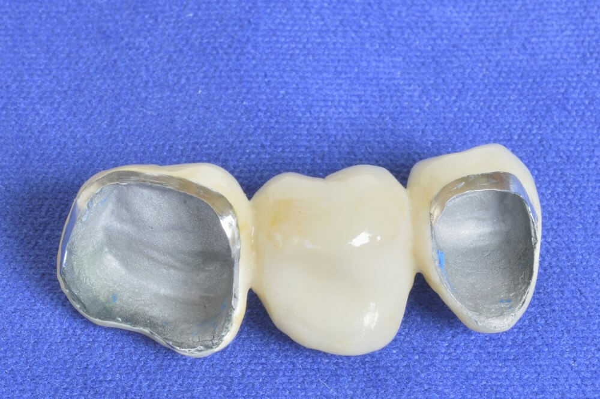
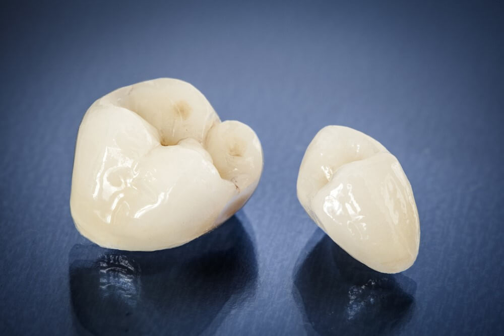

Dental Publications
This article explains the latest dental treatment techniques, and the most successful preventive measures for enjoying strong healthy teeth, in addition to dental implants, dental bridges, orthodontics, and other miscellaneous information

Benefits of porcelain teeth and costs in Turkey 2021
Table of content
Porcelain veneers teeth
Porcelain veneers are a type of dental veneers that are made of wafer-thin, custom-made shells of tooth-colored porcelain designed to cover the front surface of teeth to improve the teeth appearance. These shells are bonded to the front of the teeth changing their color, shape, size, or length.
Porcelain teeth implants procedure
At Ilajak Medical we are keen upon the arrival of our dear clients, that their teeth and general health condition are carefully examined and checked.
Based on the results of this examination, we advise you - after consulting with you - which option is most appropriate for your case.
For Porcelain dental implant , you must go through a full evaluation before the operation because dental implants consist of one or more step, and this includes:
- A comprehensive dental examination, using x-rays and 3D imaging to create a complete model of your teeth and jaw.
- Full review of your health history, the dentist should be informed of any health problems you have experienced or any medications that you take continuously.
- Report if you suffer from heart disease, diabetes, or previous bone surgery.
- Your doctor may give you an antibiotic for several days before the operation to avoid infection.
- The treatment plan is determined based on the condition of your jaw and teeth, and this plan takes into account several factors, including the number of missing teeth.
- Our dental care team will give you eating and drinking instructions before the operation.
Steps of the Dental implant:
- Jaw bone preparation and sometimes jaw bone tissue transplant.
- Implant placement in the jaw.
- Wait for the bone around the implant to grow and heal which is called Osseointegration.
- Adding the artificial tooth which is made of porcelain.
Porcelain dental bridge tooth
A dental bridge is a fixed (permanent) restoration that replaces one or more missing teeth in the mouth and in this case it's made of porcelain.
Dental bridges mimic the shape and function of natural teeth. It is also specially made for each patient according to his condition.

Porcelain dental crowns
A crown is a cover or "cap" that a dentist can place on a tooth; A crown restores a damaged or lost tooth to its normal shape, size, and function, and a crown can also protect teeth or improve their appearance.
- Porcelain crowns are an excellent option when restoring the shape and function of damaged teeth because a crown essentially replaces the entire outer part of the tooth down to gum level.
- Porcelain dental crowns provide the best near-natural appearance.

Porcelain veneers before and after
Porcelain veneers are a dynamic and effective cosmetic dentistry solution designed to fix many aesthetic problems that may affect your smile.
Porcelain veneers for crooked teeth before and after
There are many ways to straighten and treat crooked teeth including Orthodontic treatments and Porcelain veneers.
Porcelain veneers are one of the best ways to straighten teeth without braces because of their multiple cosmetic benefits and their durability.
Porcelain veneers before and after pictures
Porcelain veneers teeth pros and cons
- Pros:
- Porcelain veneers provide a natural, bright, and healthy look, in addition to their excellent quality and durability.
- It is also considered an excellent choice for an attractive and beautiful smile.
- Cons:
- Porcelain veneers have more damages and shortcomings, however, we should note that they are less aesthetic than Zirconium veneers.
- Porcelain veneers can also chip and crack.
- Removing a layer of enamel can make a tooth more sensitive to heat and cold.
Type of porcelain crowns
Porcelain teeth are made with a frame under the porcelain layer.
They can be divided according to:
- Porcelain fused to metal.
- All-porcelain.
Porcelain fused to metal
This type is made of a metal frame underneath and a fused ceramic layer on the top, and since porcelain is fused to the metal crown, its color may change, which leads to the appearance of the metal at the gum line after a period of use, and some metals may cause allergic reactions. But the advantages of porcelain fused to the metal crown are low costs, and it can be used in long bridges.
All-porcelain (non-metallic porcelain, fully ceramic)
It is made entirely of porcelain (ceramic). It also has a very strong natural look, is biocompatible, and does not change color even after many years of use.
The most popular brands of porcelain teeth are Emax, Cercon, and Vita.
Porcelain crown vs zirconia crown
Although porcelain fused to metal crowns have advantages, it does not provide the same aesthetic results as Zirconium or all-porcelain crowns, due to their exceptional durability and strength, and
Zirconium crowns generally last longer than porcelain, while porcelain crowns usually need to be replaced after a few years.
Zirconium crowns showed a 99% survival rate after five years.
Zirconium crowns are multicolored and very transparent.
|
Details |
Porcelain fused to Metal |
Zirconium |
|
Biocompatibility |
Good |
Excellent |
|
Esthetic |
Very good |
Excellent |
|
Precision |
Very good |
Excellent |
|
Color Shade |
Very good, Satisfactory |
Excellent color matrix |
|
Durability |
Excellent |
Excellent |
|
Metal allergy |
Present |
Not present |

Porcelain cost per tooth in turkey
Turkey is distinguished by reasonable costs of health care services over the countries of Europe and the world.
The cost of a specific service or treatment may be relatively high, while another might be low, and this is controlled by several factors, the most common is quality, and that makes Ilajak Medical exceptional cause we offer top quality at reasonable costs.
Regarding the costs of the porcelain crown, it starts from 100 euros per unit.
Porcelain Dental faqs
No, Traditional whitening techniques do not work on porcelain teeth.
Typical dental porcelain is a combination of kaolin, quartz, and feldspar, replicating natural teeth structure, shade and built on a layer of metal for durability and strength.
Yes, Porcelain teeth and materials used to bond them are safe and biocompatible.
Yes, Porcelain teeth are better than the acrylic in all aspect including durability and long term wear resistance.
No, Porcelain teeth costs are a reasonable and perfect option in most cases.
Yes, Porcelain teeth are considered as strong as normal teeth or even stronger.
You may need to file down a porcelain tooth to fit properly with the adjacent teeth but it is not correct to do so, it’s better to redo the whole process.
No, Porcelain teeth cannot get cavities.
Yes, Porcelain teeth can be repaired if the chip is not large using resin with the same shade, however, replacement is a better choice.
No, Porcelain teeth are stain-resistant and can keep beautiful shade for years.
Yes, it is possible to remove a porcelain tooth and keep the tooth intact, it depends on multiple factors mainly the skill and experience of the dentist.
Yes, again depending on the type and quality of the restoration, bulky and opaque ones are more susceptible to chip and break.
Yes, it is possible depending on the type of restoration i.e. veneers or crowns and the manufacturing aspect as well, opaque & bulky veneers are more susceptible to break.
No, they won't glow under black light.
Yes, Brush at least twice a day to maintain good oral hygiene, for the enamel underneath the restorations and the overall oral hygiene.
Ilajak Medical© | A passion for care.
Latest Articles, Health News, Clinical Research, and more.
Keratoconus and cataracts , symptoms and types
What is Keratoconus, How it looks and what are the symptoms? Also, find out Keratoconus’s types and stages , Learn more with ILAJAK Medical.
Best Spa Resorts with Medical Services clinics in Turkey.
In this article, we will learn about the importance of health resorts and the treatment services they offer and the top and famous health & medical resorts in Turkey
Zirconia teeth type and costs in Turkey 2021
Zirconia dental crowns and bridges are used to treat and protect the affected teeth due to decay or fractures, etc, In this article we will learn about the advantages and drawbacks of Zirconia Crowns and bridges
Benefits of porcelain teeth and costs in Turkey 2021
Porcelain crowns and veneers are used to strengthen and protect damaged teeth due to decay or cracks or any other reason. In this article, we will discover dental porcelain and its advantages and risks.